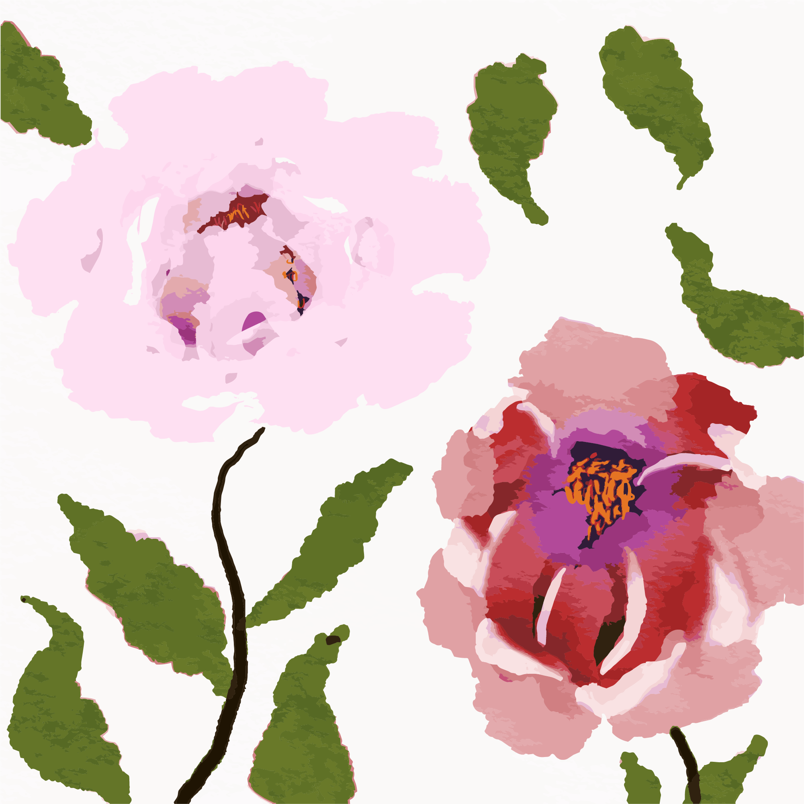
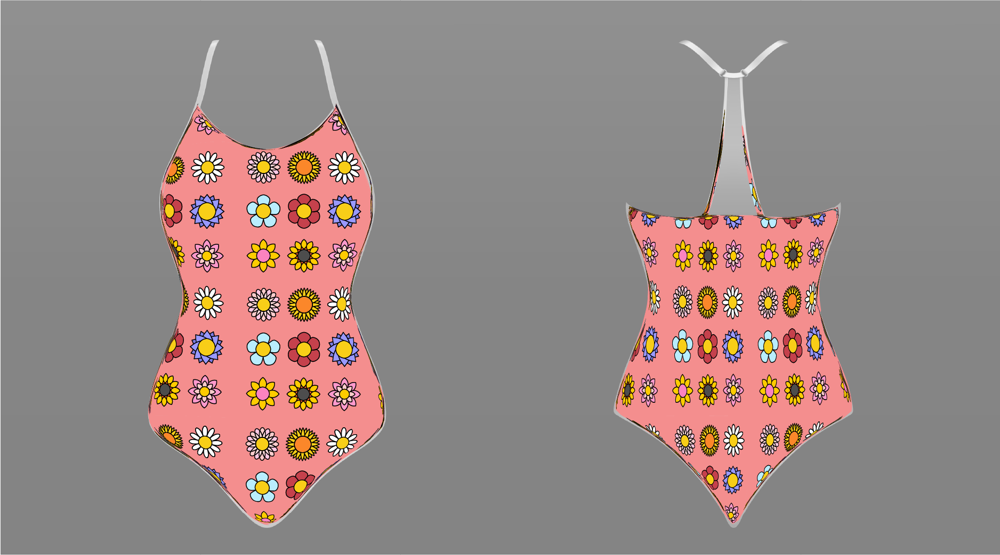

My Projects

My Watercolor Flowers
Learning how to create art in an app called, Procreate on my iPad.

Food Truck Poster
A mock poster for a local food event, showcasing vibrant colors and playful typography.
Cartoon Girl
A photo converted into a cartoon drawing, showcasing a playful and artistic interpretation. and playful typography.

Module 1 Practice Prompts
An Adobe Illustrator practice piece, featuring a stylized landscape with bold colors and geometric shapes.

Module 5 Practice Prompts
A watercolor practice piece, featuring soft colors and organic shapes, showcasing a dreamy and fluid aesthetic and tea-dyed effects.

AI photo
A project utilizing AI to enhance design processes.

Eiffel Tower
A play on perspective in Adobe Photoshop, showcasing the iconic landmark in a unique and creative way.
Watercolor Flower
A beautiful watercolor painting of a flower, showcasing soft colors and delicate brushwork using Procreate on the iPad.

October 23 Birthdays
A social media post designed for a radio station, featuring vibrant colors and playful typography to engage listeners.

October 25
A social media post designed for a radio station, featuring vibrant colors and playful typography to engage listeners.
.png)
Employment ad
A social media post promoting a job opening for a sales executive at the radio station, featuring bold typography and eye-catching graphics.

Infographic Poster
An infographic poster design, showcasing data visualization and engaging graphics.
_V2.png)
Tiny's Logo
A logo design for a food truck, featuring playful typography and a vibrant color palette.

News Article Post
A social media post for a radio station, highlighting a recent news article with engaging visuals and typography.

Pattern Mockup
A pattern mockup created in Adobe Illustrator, showcasing a seamless design suitable for various applications.
About Me
Hello! I am a designer based in New Mexico with a passion for clean code and geometric art. I enjoy blending technical skill with creative whimsy to solve complex problems.
Skills: HTML5, CSS3, JavaScript, Adobe Illustrator, UI/UX Design.